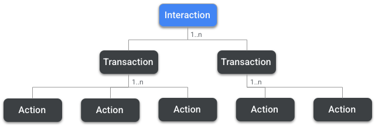
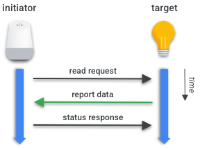
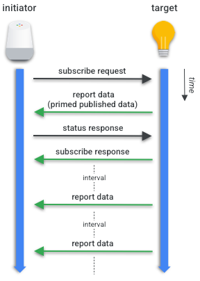
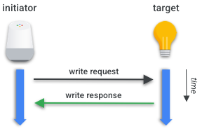
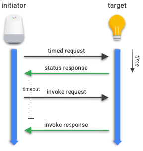

Interaction Model
Concepts
The Data Model (DM) of a Node is only relevant if we can perform operations on it. The Interaction Model (IM) defines a Node's DM relationship with the DM of other Nodes, providing a common language for communication between DMs.
Nodes interact with each other by:
- Reading and Subscribing to Attributes and Events
- Writing to Attributes
- Invoking Commands
Whenever a Node establishes an encrypted communication sequence with another Node, they constitute an Interaction relationship. Interactions may be composed of one or more Transactions, and Transactions are composed of one or more of Actions which can be understood as IM-level messages between Nodes.

Several Actions are supported on Transactions, such as a Read Request Action that requests an Attribute or Event from another Node, or its response, the Report Data Action, which carries the information back from the server to the client.
Initiators and Targets
The Node that initiates a Transaction is the Initiator, while the Node that responds is the Target. Typically the Initiator is a Client Cluster and the Target is a Server Cluster. However, there are exceptions to this pattern, such as in the Subscription Interactions analyzed further down in this section.
Groups
Nodes and Endpoints in Matter may belong to a Group. A Group is a mechanism for addressing and sending messages to several Nodes in the same Action simultaneously. All Nodes in a Group share the same Group ID, a 16-bit integer.
To accomplish group-level communication (Groupcast), Matter leverages IPv6 Multicast messages, and all Group members have the same Multicast address.
Paths
Whenever we want to interact with an Attribute, Event, or Command, we must specify the Path for this interaction: the location of an Attribute, Event or Command in the Data Model hierarchy of a Node. The caveat is that paths may also use Groups or Wildcard Operators to address several Nodes or Clusters simultaneously, aggregating these Interactions and thus decreasing the number of actions.
This mechanism is important to enhance the responsiveness of communications. For example, when a user wants to shut down all lights, a voice assistant can establish a single interaction with several lights within a Group instead of a sequence of individual Interactions. If the Initiator creates individual Interactions with each light, it can generate human-perceptible latency in Device responsiveness. This effect causes the multiple Devices to react to a command with visible delays between them. This is often referred to as "popcorn effect".
A Path in Matter can be assembled using one of the options below:
<path> = <node> <endpoint> <cluster> <attribute | event | command>
<path> = <group ID> <cluster> <attribute | event | command>And within these Path building blocks, endpoint and cluster may also include Wildcards Operators for selecting more than one Node instance.
Timed and Untimed
There are two ways of performing a Write or Invoke Transaction: Timed and Untimed. Timed Transactions establish a maximum timeout for the Write/Invoke Action to be sent. The purpose of this timeout is to prevent an Intercept Attack on the Transaction. It is especially valid for Devices that gate access to assets, such as garage openers and locks.
To understand Timed Transactions it's useful to understand how Intercept Attacks can happen and why Timed Transactions are important.
The Intercept Attack
An Intercept Attack has the following pattern:
-
Alice sends Bob an initial message, such as a Write Request Action.
-
Eve, a man-in-the-middle, intercepts the message and prevents Bob from receiving it, for example through some type of radio jamming.
-
Alice, not receiving a response from Bob, sends a second message. Eve intercepts again and prevents Bob from receiving it.
-
Eve sends the first intercepted message to Bob, as if it were coming from Alice.
-
Bob sends the response to Alice (and Eve).
-
Eve holds the second intercepted message for a later replay. Since Bob never received the original second intercepted message from Alice, it will accept it. This message represent a security breach when the message encodes a command such as "open lock".
To prevent these types of attacks, Timed Actions set a maximum Transaction timeout at the start of the Transaction. Even if Eve manages to execute the first six steps of the attack vector, it will not be able to replay the message on step 7 due to an expired timeout on the Transaction.
Timed Transactions increase the complexity and number of Actions. Thus they are not recommended for every Transaction, but only the critical operations on Devices that have control over physical or virtual security and privacy assets.
SDK Abstractions
The sections Read Transactions, Write Transactions, and Invoke Transactions provide a high-level overview of the Interaction Model Actions performed by the SDK.
The developer creating a product that uses the Matter SDK typically does not perform calls to execute Actions directly; the Actions are abstracted by SDK functions that will encapsulate them into an Interaction. However, understanding IM Actions is important to provide the engineer a good proficiency on the capabilities of Matter, as well as fine control over the SDK implementation.
Read Transactions
Read Transaction
One of the first use cases when interacting with Nodes in Matter is the reading of an Attribute from another Node, such as a temperature value from a sensor. In such Interactions, the first Action that must be performed is the Read Request Action.
Read Request Action
Direction: Initiator -> Target
In this Action the Initiator queries a Target providing:
- Attribute Requests: a list of zero or more of the Target's Attributes. This list is composed of zero or more Paths to the Target's requested Attributes.
- Event Requests: list of zero or more Paths to the Target's requested Events. After the Read Request Action is received by the Target it will assemble a Report Data Action with the requested information.

After the Read Request Action is received by the Target it will assemble a Report Data Action with the requested information.
Report Data Action
Direction: Target -> Initiator
In this Action the Target responds with:
- Attribute Reports: a list of zero or more of the reported Attributes requested in the Read Action Request.
- Event Reports: a list of zero or more reported Events.
- Suppress Response: a flag that determines whether the status response to this action should be suppressed.
- Subscription ID: if this report is part of a subscribing transaction, it must include an integer used to identify the subscription transaction.
Status Response Action
Direction: either Target -> Initiator or Initiator -> Target
Once the Initiator receives the requested data, by default it must generate a Status Response Action. This action is sent from the Initiator, acknowledging the receipt of the reported data. If the flag Suppress Status Response is set, the Initiator must not send the Status Response Action.
Once the Status Response Action is sent by the Initiator, or a Report Data Action is received by the Initiator with the Suppress Response flag enabled, the read/report query is finished.
The Status Response Action simply contains a status field that will either acknowledge operation success or present a failure code.
Read Restrictions
The Read Request Action and Report Data Action are Unicast-only. Moreover, the Paths of these requests may not target a Group of Nodes.
The Status Response Action is Unicast-only and can't be generated as a response to a groupcast.
Subscription Transaction
Subscribe Request Action
Direction: Initiator -> Target
In addition to a singular Read Request Action, an Initiator may also subscribe to periodic updates of an Attribute or Event. Thus the same Report Data Action can be generated as a result of periodic data updates that follow a Subscription Transaction.
A Subscription Interaction creates a relationship between two Nodes, in which the Target periodically generates Report Data Actions to the Initiator. The Initiator is the Subscriber and the Target is the Publisher.

A Subscribe Request Action contains:
- Min Interval Floor: the minimum interval between reports.
- Max Interval Ceiling: the maximum interval between reports.
- Attribute Reports: a list of zero or more of the reported Attributes requested in the Read Action Request.
- Event Reports: a list of zero or more reported Events.
After the Subscribe Request, the Target responds to the Initiator with a Report Data Action containing the first batch of reported data: the Primed Published Data.
The Initiator then acknowledges the Report Data Action with a Status Response Action sent to the Target. Once the Target receives a Status Response Action reporting no errors, it sends a Subscribe Response Action.
The Target will subsequently send Report Data Action periodically at the negotiated interval and the Initiator will respond to those Actions until the subscription is lost or cancelled.
Subscribe Response Action
Direction: Target -> Initiator
This is the last Action on the Subscription Transaction and concludes the process. It includes:
- Subscription ID: a integer that identifies the subscription.
- Min Interval: the final, determined minimum interval between reports.
- Max Interval: the final, determined maximum interval between reports.
Subscribe Restrictions
- The Subscribe Request Action and the Subscribe Response Action are Unicast-only actions.
- All Report Data Actions in a Subscription Interaction must have the same Subscription ID.
- If the Subscriber does not receive a Report Data Action within the maximum negotiated interval between Actions, the subscription will be terminated.
- As a consequence of the previous rule, the Publisher may terminate a Subscription Interaction by simply stopping sending periodic Report Data Actions.
- The Subscriber may terminate the Subscription Interaction by responding to a Report Data Action with an INACTIVE_SUBSCRIPTION status code.
Write Transactions
In the last section we discussed the reading interactions of Attributes and Events. In this section we'll discuss the writing of Attributes, which is the change of an Attribute value on a Cluster such as Level.
Untimed Write Transaction
Write Request Action
Direction: Initiator -> Target
Similar to the Read Request Action, in this Action the Initiator provides the Target with:
- Write Requests: a list of one or more tuples containing Path and data.
- Timed Request: a flag that indicates whether this Action is part of a Timed Write Transaction.
- Suppress Response: a flag that indicates whether the Response Status Action should be suppressed.

Write Response Action
Direction: Target -> Initiator
After the Target receives the Write Request Action it will finalize the transaction with a Write Response Action that carries:
- Write Responses: a list of paths and error codes for every Write Request sent on the Write Request Action.
Untimed Write Restrictions
The Write Request Action may be a groupcast, but in this case the Suppress Response flag must be set. The rationale is that otherwise the network might be flooded by simultaneous responses from every member of a group.
To enable this behavior, the Path used in the Write Requests list may contain Groups and alternatively they may contain wildcards, but only on the Endpoint field.
Timed Write Transaction
Timed write transactions add a few steps to untimed write transactions.
Timed Request Action
Direction: Initiator -> Target
A Initiator starts the Transaction sending this Action that contains:
- Timeout: how many milliseconds this transaction may remain open. During this period the next action sent by the Initiator will be considered valid.
Once the Timed Request Action is received, the Target must acknowledge the Timed Request Action with a Status Response Action. Once the Initiator receives a Status Response Action reporting no errors, it will send a Write Request Action.
Write Request Action
Same as the previously described Write Request Action.
Write Response Action
Same as the previously described Write Response Action.
Timed Write Restrictions
The Timed Request Action, the Write Request Action and the Write Response Action are unicast-only.
Invoke Transactions
Invoke Transactions are used for invoking one or more Cluster Commands on a Target Node. It is similar to remote procedures calls made to a command defined in the Cluster.
In a similar way of Write Transactions, Invoke Transactions support Timed and Untimed Transactions. Please refer to the Timed and Untimed Actions section for further information on Timed Transactions.
Untimed Invoke Transaction
Invoke Request Action
Direction: Initiator -> Target
Similar to the Read Request Action and Write Request Action, in this Action the Initiator provides the Target with:
- Invoke Requests: a list of paths to Cluster Commands, as well as optional arguments to the commands, named Command Fields.
- Timed Request: a flag that indicates whether this action is part of a Timed Invoke Transaction.
- Suppress Response: a flag that indicates whether the Invoke Response Action should be suppressed.
- Interaction ID: an integer used for matching the Invoke Request Action to the Invoke Response Action.
Invoke Response Action
Direction: Target -> Initiator
After the Target receives the Invoke Request Action it will finalize the transaction with an Invoke Response Action that carries:
- Invoke Responses: a list of command responses or status for every invoke request sent.
- Interaction ID: a integer used for matching the Invoke Response Action to the Invoke Request Action.
Untimed Invoke Restrictions
The Invoke Request Action may be a groupcast, but in this case the Suppress Response flag must be set. The rationale is that otherwise the network might be flooded by simultaneous responses from every member of a group.
To enable this behavior the Path used in the Invoke Requests list may contain Groups and alternatively they may contain wildcards, but only on the Endpoint field. Moreover, if the Action is groupcast, this transaction terminates with no response.
Timed Invoke Transactions
Similar to Timed Write Transactions, Timed Invoke Transactions also start with the Timed Request Action.
Timed Request Action
Direction: Initiator -> Target
A Initiator starts the Transaction sending this Action that contains:
- Timeout: how many milliseconds this transaction may remain open. During this period the next action sent by the Initiator will be considered valid.
Once the Timed Request Action is received, the Target must acknowledge the Timed Request Action with a Status Response Action. Once the Initiator receives a Status Response Action reporting no errors, it will send a Invoke Request Action.

Invoke Request Action
Same as the previously described Invoke Request Action.
Invoke Response Action
Same as the previously described Invoke Response Action
Timed Invoke Restrictions
All invoke commands may be called on a Timed Interaction. The Timed Request Action, the Invoke Request Action and the Invoke Response Action are Unicast-only and thus can't be used as groupcast on Timed Invoke Transactions.
The Invoke Request Action supports the usage of paths with Groups, as well as wildcards, but the Invoke Response Action does not support wildcard usage.
This content was originally published on the Google Developer Site